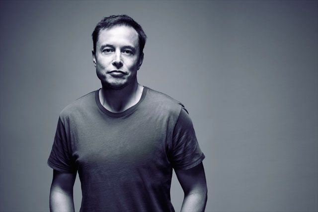

Elon Musk
The real life IRON MAN

Elon Musk is the founder and CEO of SpaceX, Tesla and Neuralink. Moreover, those are only small pieces of his grand-scale puzzle that leads to a better future and the colonization of Mars.
- 1983 he created a video game and sold it for 500$.
- 1994 he got Wharton economics and physics degrees.
- 1999 he starts X.com - an online bank with his own money.
- 2000 he merges with his rival start-up Confinity to form PayPal.
- 2001 Elon moved to LA to be closer to the space industry and learned how to build rockets from books.
- 2004 he founded likeminded people and started his venture into electric cars - TESLA
- 2006 his first rocket was launched and exploded.
- 2008 the first TESLA customers got their Roadsters at $109,000.
- 2009 Musk unveiled the Model S car.
- 2010 TESLA went public at 17$ per share, ending at $24 by the end of the day.
- 2011 Elon announced the project for reusable rockets, which would make flights 100 times cheaper.
- 2015 Musk unveiled Powerwall, first customers got their Model X.
- 2018 Elon Musk launched his largest rocket - The Falcon Heavy.
- 2020 Elon Musk Is Now The Fifth Richest Person In The World.
"I think it is possible for ordinary people to choose to be extraordinary."
I say something, and then it usually happens. Maybe not on schedule, but it usually happens."